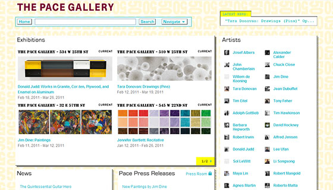

21 Beautiful Art Gallery Websites for Inspiration
InspirationAbinash Choudhury
Art galleries are in the business of aesthetics, yet it’s amazing how generic and uninventive many of their websites can be. Minimal graphics, fonts, and color schemes are designed to keep the viewer’s focus on the art itself, often at the expense of creativity and attractiveness. As in any business, it’s important for galleries to make a website that stands out and is memorable. The websites on this list have achieved that goal by making subtle, yet integral design choices that, in fact, often increase both functionality and the viewing experience.
You may be interested in the following related articles as well.
- 90 Beautifully Delicious Coffee Website Designs
- Showcase Of Popular Automobiles Websites
- Showcase of Excellence Celebrity Websites
- 60+ Fresh and Inspirational WordPress Site Designs
- 70+ Fresh and Creative Single Page Website Designs
Please feel free to join us and you are always welcome to share your thoughts that our readers may like.
Do not forget to Subscribe our RSS-feed and follow us on twitter - for recent updates.
Beautiful Art Gallery Websites for Inspiration
The websites below are useful sources of inspiration, and they prove that there are multiple variations on similar themes which can be used when you make a website. They show the array of choices that designers have and the ways in which sophisticated, intricate, or visually interesting graphics can actually enhance the look of the art, not counteract it. By creating a balance between the work being sold and the design format, art galleries have the potential to optimize their website as a marketing tool and therefore increase their business.
01. The Pace Gallery
While many gallery websites take the minimalist approach, the Pace Gallery is not afraid to include elements of color, pattern, and interactive functions in a bulletin-like format. Their web page background images consist of a pale purple number “50,” in celebration of their 50th anniversary in 2010. Without tabs or links to separate sections, instead the gallery’s information is laid out in a series of boxes, with sections on artists, exhibitions, press releases, media, locations, books, news, and about the gallery. Click on an artist and the artists’ box transforms. Select the option to “expand” and the entire web page layout changes, so that sections where additional information appears are highlighted (perhaps old press releases, books, and the current exhibition), while irrelevant sections (maybe media or events) are darkened. It’s a unique system devised so that those looking for information on a specific person or exhibition can avoid skipping from section to section and, instead, find all the information they need laid out in one place.
02. SCAI The bathhouse

Another website formatted in a bulletin style.
03. Galerie Emanuel Perrotin

And another version of the same concept.
04. Luhring Augustine

Luhring Augustine’s website may appear to have adopted the typically simplistic gallery approach, but here they show how to make a website where beauty is found in the details. They get their edge from a plethora of images, found in literally every section of the website, which create visual interest and easy navigation. Scroll your mouse over an artist’s name and a large sized image, rather than just a thumbnail, appears on the right hand side of the screen. Look up current exhibitions and find a long page dedicated to images from past and future exhibitions as well. Not a single news item is published without some sort of photo attached, so that the palette of grey in the web page background design becomes simply a canvas upon which a library of images is projected.
05. Galerie Thomas Schulte

While many gallery websites take the minimalist approach, the Pace Gallery is not afraid to include elements of color, pattern, and interactive functions in a bulletin-like format. Their web page background images consist of a pale purple number “50,” in celebration of their 50th anniversary in 2010. Without tabs or links to separate sections, instead the gallery’s information is laid out in a series of boxes, with sections on artists, exhibitions, press releases, media, locations, books, news, and about the gallery. Click on an artist and the artists’ box transforms. Select the option to “expand” and the entire web page layout changes, so that sections where additional information appears are highlighted (perhaps old press releases, books, and the current exhibition), while irrelevant sections (maybe media or events) are darkened. It’s a unique system devised so that those looking for information on a specific person or exhibition can avoid skipping from section to section and, instead, find all the information they need laid out in one place.
06. Bruce Silverstein

And a second example of rotating homepage images – this time of artists and collections.
07. Friedrich Petzel

This website allows scrolling back and forth between two main images that correspond with the gallery’s two locations.
08. The Pace Gallery
While many gallery websites take the minimalist approach, the Pace Gallery is not afraid to include elements of color, pattern, and interactive functions in a bulletin-like format. Their web page background images consist of a pale purple number “50,” in celebration of their 50th anniversary in 2010. Without tabs or links to separate sections, instead the gallery’s information is laid out in a series of boxes, with sections on artists, exhibitions, press releases, media, locations, books, news, and about the gallery. Click on an artist and the artists’ box transforms. Select the option to “expand” and the entire web page layout changes, so that sections where additional information appears are highlighted (perhaps old press releases, books, and the current exhibition), while irrelevant sections (maybe media or events) are darkened. It’s a unique system devised so that those looking for information on a specific person or exhibition can avoid skipping from section to section and, instead, find all the information they need laid out in one place.
09. The Pace Gallery
While many gallery websites take the minimalist approach, the Pace Gallery is not afraid to include elements of color, pattern, and interactive functions in a bulletin-like format. Their web page background images consist of a pale purple number “50,” in celebration of their 50th anniversary in 2010. Without tabs or links to separate sections, instead the gallery’s information is laid out in a series of boxes, with sections on artists, exhibitions, press releases, media, locations, books, news, and about the gallery. Click on an artist and the artists’ box transforms. Select the option to “expand” and the entire web page layout changes, so that sections where additional information appears are highlighted (perhaps old press releases, books, and the current exhibition), while irrelevant sections (maybe media or events) are darkened. It’s a unique system devised so that those looking for information on a specific person or exhibition can avoid skipping from section to section and, instead, find all the information they need laid out in one place.
10. The Pace Gallery
While many gallery websites take the minimalist approach, the Pace Gallery is not afraid to include elements of color, pattern, and interactive functions in a bulletin-like format. Their web page background images consist of a pale purple number “50,” in celebration of their 50th anniversary in 2010. Without tabs or links to separate sections, instead the gallery’s information is laid out in a series of boxes, with sections on artists, exhibitions, press releases, media, locations, books, news, and about the gallery. Click on an artist and the artists’ box transforms. Select the option to “expand” and the entire web page layout changes, so that sections where additional information appears are highlighted (perhaps old press releases, books, and the current exhibition), while irrelevant sections (maybe media or events) are darkened. It’s a unique system devised so that those looking for information on a specific person or exhibition can avoid skipping from section to section and, instead, find all the information they need laid out in one place.
11. The Pace Gallery
While many gallery websites take the minimalist approach, the Pace Gallery is not afraid to include elements of color, pattern, and interactive functions in a bulletin-like format. Their web page background images consist of a pale purple number “50,” in celebration of their 50th anniversary in 2010. Without tabs or links to separate sections, instead the gallery’s information is laid out in a series of boxes, with sections on artists, exhibitions, press releases, media, locations, books, news, and about the gallery. Click on an artist and the artists’ box transforms. Select the option to “expand” and the entire web page layout changes, so that sections where additional information appears are highlighted (perhaps old press releases, books, and the current exhibition), while irrelevant sections (maybe media or events) are darkened. It’s a unique system devised so that those looking for information on a specific person or exhibition can avoid skipping from section to section and, instead, find all the information they need laid out in one place.
12. The Pace Gallery
While many gallery websites take the minimalist approach, the Pace Gallery is not afraid to include elements of color, pattern, and interactive functions in a bulletin-like format. Their web page background images consist of a pale purple number “50,” in celebration of their 50th anniversary in 2010. Without tabs or links to separate sections, instead the gallery’s information is laid out in a series of boxes, with sections on artists, exhibitions, press releases, media, locations, books, news, and about the gallery. Click on an artist and the artists’ box transforms. Select the option to “expand” and the entire web page layout changes, so that sections where additional information appears are highlighted (perhaps old press releases, books, and the current exhibition), while irrelevant sections (maybe media or events) are darkened. It’s a unique system devised so that those looking for information on a specific person or exhibition can avoid skipping from section to section and, instead, find all the information they need laid out in one place.
13. The Pace Gallery
While many gallery websites take the minimalist approach, the Pace Gallery is not afraid to include elements of color, pattern, and interactive functions in a bulletin-like format. Their web page background images consist of a pale purple number “50,” in celebration of their 50th anniversary in 2010. Without tabs or links to separate sections, instead the gallery’s information is laid out in a series of boxes, with sections on artists, exhibitions, press releases, media, locations, books, news, and about the gallery. Click on an artist and the artists’ box transforms. Select the option to “expand” and the entire web page layout changes, so that sections where additional information appears are highlighted (perhaps old press releases, books, and the current exhibition), while irrelevant sections (maybe media or events) are darkened. It’s a unique system devised so that those looking for information on a specific person or exhibition can avoid skipping from section to section and, instead, find all the information they need laid out in one place.
14. The Pace Gallery
While many gallery websites take the minimalist approach, the Pace Gallery is not afraid to include elements of color, pattern, and interactive functions in a bulletin-like format. Their web page background images consist of a pale purple number “50,” in celebration of their 50th anniversary in 2010. Without tabs or links to separate sections, instead the gallery’s information is laid out in a series of boxes, with sections on artists, exhibitions, press releases, media, locations, books, news, and about the gallery. Click on an artist and the artists’ box transforms. Select the option to “expand” and the entire web page layout changes, so that sections where additional information appears are highlighted (perhaps old press releases, books, and the current exhibition), while irrelevant sections (maybe media or events) are darkened. It’s a unique system devised so that those looking for information on a specific person or exhibition can avoid skipping from section to section and, instead, find all the information they need laid out in one place.
15. The Pace Gallery
While many gallery websites take the minimalist approach, the Pace Gallery is not afraid to include elements of color, pattern, and interactive functions in a bulletin-like format. Their web page background images consist of a pale purple number “50,” in celebration of their 50th anniversary in 2010. Without tabs or links to separate sections, instead the gallery’s information is laid out in a series of boxes, with sections on artists, exhibitions, press releases, media, locations, books, news, and about the gallery. Click on an artist and the artists’ box transforms. Select the option to “expand” and the entire web page layout changes, so that sections where additional information appears are highlighted (perhaps old press releases, books, and the current exhibition), while irrelevant sections (maybe media or events) are darkened. It’s a unique system devised so that those looking for information on a specific person or exhibition can avoid skipping from section to section and, instead, find all the information they need laid out in one place.
16. The Pace Gallery
While many gallery websites take the minimalist approach, the Pace Gallery is not afraid to include elements of color, pattern, and interactive functions in a bulletin-like format. Their web page background images consist of a pale purple number “50,” in celebration of their 50th anniversary in 2010. Without tabs or links to separate sections, instead the gallery’s information is laid out in a series of boxes, with sections on artists, exhibitions, press releases, media, locations, books, news, and about the gallery. Click on an artist and the artists’ box transforms. Select the option to “expand” and the entire web page layout changes, so that sections where additional information appears are highlighted (perhaps old press releases, books, and the current exhibition), while irrelevant sections (maybe media or events) are darkened. It’s a unique system devised so that those looking for information on a specific person or exhibition can avoid skipping from section to section and, instead, find all the information they need laid out in one place.
17. The Pace Gallery
While many gallery websites take the minimalist approach, the Pace Gallery is not afraid to include elements of color, pattern, and interactive functions in a bulletin-like format. Their web page background images consist of a pale purple number “50,” in celebration of their 50th anniversary in 2010. Without tabs or links to separate sections, instead the gallery’s information is laid out in a series of boxes, with sections on artists, exhibitions, press releases, media, locations, books, news, and about the gallery. Click on an artist and the artists’ box transforms. Select the option to “expand” and the entire web page layout changes, so that sections where additional information appears are highlighted (perhaps old press releases, books, and the current exhibition), while irrelevant sections (maybe media or events) are darkened. It’s a unique system devised so that those looking for information on a specific person or exhibition can avoid skipping from section to section and, instead, find all the information they need laid out in one place.
18. The Pace Gallery
While many gallery websites take the minimalist approach, the Pace Gallery is not afraid to include elements of color, pattern, and interactive functions in a bulletin-like format. Their web page background images consist of a pale purple number “50,” in celebration of their 50th anniversary in 2010. Without tabs or links to separate sections, instead the gallery’s information is laid out in a series of boxes, with sections on artists, exhibitions, press releases, media, locations, books, news, and about the gallery. Click on an artist and the artists’ box transforms. Select the option to “expand” and the entire web page layout changes, so that sections where additional information appears are highlighted (perhaps old press releases, books, and the current exhibition), while irrelevant sections (maybe media or events) are darkened. It’s a unique system devised so that those looking for information on a specific person or exhibition can avoid skipping from section to section and, instead, find all the information they need laid out in one place.
19. The Pace Gallery
While many gallery websites take the minimalist approach, the Pace Gallery is not afraid to include elements of color, pattern, and interactive functions in a bulletin-like format. Their web page background images consist of a pale purple number “50,” in celebration of their 50th anniversary in 2010. Without tabs or links to separate sections, instead the gallery’s information is laid out in a series of boxes, with sections on artists, exhibitions, press releases, media, locations, books, news, and about the gallery. Click on an artist and the artists’ box transforms. Select the option to “expand” and the entire web page layout changes, so that sections where additional information appears are highlighted (perhaps old press releases, books, and the current exhibition), while irrelevant sections (maybe media or events) are darkened. It’s a unique system devised so that those looking for information on a specific person or exhibition can avoid skipping from section to section and, instead, find all the information they need laid out in one place.
20. The Pace Gallery
While many gallery websites take the minimalist approach, the Pace Gallery is not afraid to include elements of color, pattern, and interactive functions in a bulletin-like format. Their web page background images consist of a pale purple number “50,” in celebration of their 50th anniversary in 2010. Without tabs or links to separate sections, instead the gallery’s information is laid out in a series of boxes, with sections on artists, exhibitions, press releases, media, locations, books, news, and about the gallery. Click on an artist and the artists’ box transforms. Select the option to “expand” and the entire web page layout changes, so that sections where additional information appears are highlighted (perhaps old press releases, books, and the current exhibition), while irrelevant sections (maybe media or events) are darkened. It’s a unique system devised so that those looking for information on a specific person or exhibition can avoid skipping from section to section and, instead, find all the information they need laid out in one place.
21. The Pace Gallery
While many gallery websites take the minimalist approach, the Pace Gallery is not afraid to include elements of color, pattern, and interactive functions in a bulletin-like format. Their web page background images consist of a pale purple number “50,” in celebration of their 50th anniversary in 2010. Without tabs or links to separate sections, instead the gallery’s information is laid out in a series of boxes, with sections on artists, exhibitions, press releases, media, locations, books, news, and about the gallery. Click on an artist and the artists’ box transforms. Select the option to “expand” and the entire web page layout changes, so that sections where additional information appears are highlighted (perhaps old press releases, books, and the current exhibition), while irrelevant sections (maybe media or events) are darkened. It’s a unique system devised so that those looking for information on a specific person or exhibition can avoid skipping from section to section and, instead, find all the information they need laid out in one place.

About InstantShift
InstantShift is leading design and inspiration related community for web designers and developers daily resource, inspiration and premium web design and development.